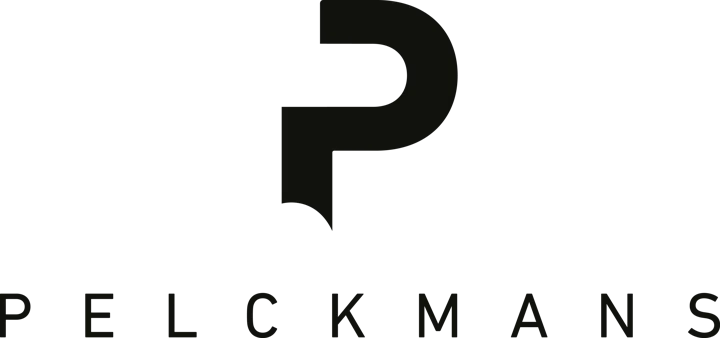
Vormgeving
Logo’s, kleuren en lettertypes van De Vooruitblik.
Logo
De logo’s
Het project
De Vooruitblik
Boek, videopodcast, Radio 1 en evenementen.
De afzender
Universiteit van Vlaanderen
De organisatie achter het project.
Logo in Electric Purple op Varsity Green, Ballpoint of Electric Blue.
Partnerlogo’s
Logo’s van universiteiten, initiatiefnemers en partners. Gebruik de originele bestanden.


Jonge Academie
Download logo

Vlaamse overheid
Download logo

VRT
Download logo

Radio 1
Download logo

Nationale Loterij
Download logo

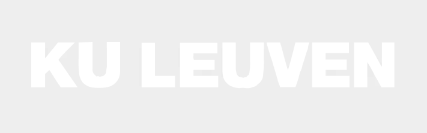
KU Leuven
Download logo

VUB
Download logo

UGent
Download logo

UHasselt
Download logo

UAntwerpen
Download logo

Kleuren
Klik op een kleur om de code te kopiëren.
WelPaars op groen
WelGroen op licht
NietGroen op rood
NietGroen op geel
Eén verzadigde accentkleur per uiting. Rood of geel met paars, niet met groen.
Lettertypes
Drie lettertypes met elk een eigen rol. Gelicentieerd, niet te downloaden.
Koppen en cijfers
Oldschool Grotesk Condensed
Tekst
Oldschool Grotesk
Accenten
Tiempos Text Italic
Boekcovers en e-mailhandtekeningen
Boekcovers, banners en sociale visuals staan in de beeldbank.
Naar het algemene materiaal →